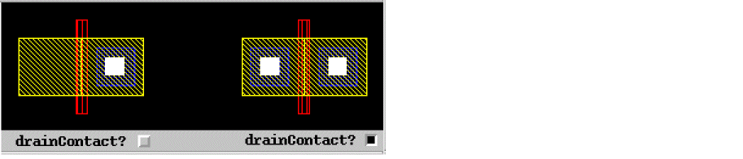
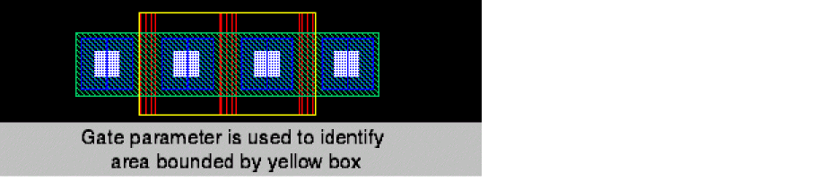
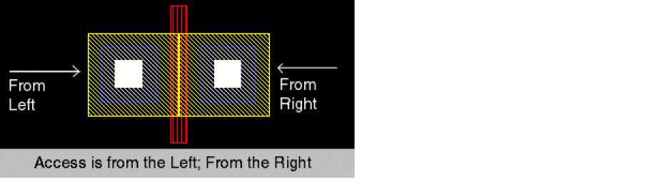
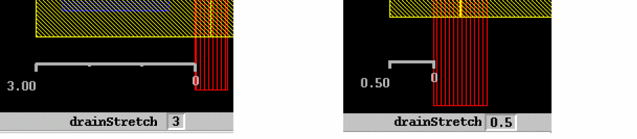
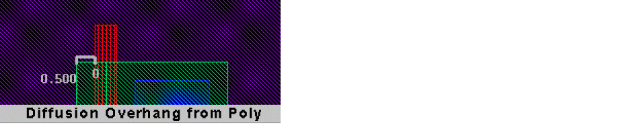
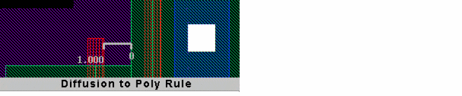
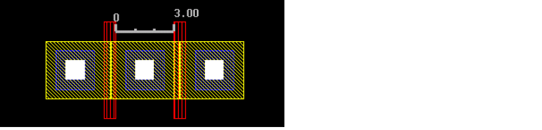

Creating CMOS Pcells to Use with Abutment
To create Pcells that have a built-in abutment capability:
-
Create a Pcell specifically for abutment.
Editing an existing Pcell for abutment is much more difficult than creating a new one for the purpose. For information on creating Pcells, see the Virtuoso Parameterized Cell Reference. -
Add the following abutment parameters to the Pcell.
-
Conditional inclusion or exclusion of contacts. For more information, see abutCondInclusion Property.
-
Gate pin identification. For more information, see abutGateNet Property.
-
Access direction identification. For information, see abutAccessDir Property.
-
Specify stretchable material. For information, see abutMosStretchMat Property.
The first element in theabutStretchMatlist isdrainStretch.The second element in theabutStretchMatlist isabutMinExt.The third element in theabutStretchMatlist isabutRule1Ext.The fourth element in theabutStretchMatlist isabutRule2Ext.The fifth element in theabutStretchMatlist isabutContactExt.
-
Conditional inclusion or exclusion of contacts. For more information, see abutCondInclusion Property.
MOS Device Abutment without a User-Defined Function
Another way to process abutment and unabutment without creating an abutFunction callback, is to use the abutMosStretchMat property. The abutMosStretchMat property is used with the automatic abutment properties to define abutment; for more information, see abutMosStretchMat Property.
This section describes the automatic abutment properties that you will have to add to Pcells to use auto-abutment on standard MOS Pcells without having to define your own abutFunction.
Return to top